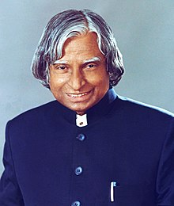

A.P.J Abdul kalam
1931-2015
MISSILE MAN OF INDIA
Avul Pakir Jainulabdeen Abdul Kalam
kalam sir played a major part in developing many missiles under the
mission including Agni, an intermediate range ballistic missile and
Prithvi, the tactical surface-to-surface missile, although the
projects have been criticised for mismanagement and cost and time
overruns.Kalam served as the Chief Scientific Adviser to the Prime
Minister and Secretary of the Defence Research and Development
Organisation from July 1992 to December 1999. The Pokhran-II nuclear
tests were conducted during this period in which he played an
intensive political and technological role. Kalam served as the
Chief Project Coordinator, along with Rajagopala Chidambaram, during
the testing phase.
Biography Section
-
He thus came to be known as the Missile Man of India for his work
on the development of ballistic missile and launch vehicle
technology.
-
Kalam was elected as the 11th president of India in 2002 with the
support of both the ruling Bharatiya Janata Party and the
then-opposition Indian National Congress
-
After graduating from the Madras Institute of Technology in 1960,
Kalam joined the Aeronautical Development Establishment of the
Defence Research and Development Organisation (by Press
Information Bureau, Government of India) as a scientist after
becoming a member of the Defence Research & Development Service
(DRDS)
-
In 1963 to 1964, he visited NASA's Langley Research Center in
Hampton, Virginia; Goddard Space Flight Center in Greenbelt,
Maryland; and Wallops Flight Facility
-
In 1963 to 1964, he visited NASA's Langley Research Center in
Hampton, Virginia; Goddard Space Flight Center in Greenbelt,
Maryland; and Wallops Flight Facility